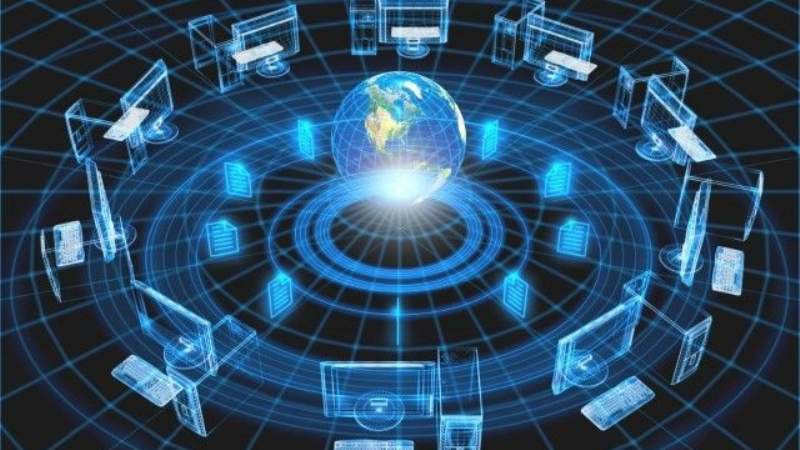

Conmutación y Multiplexación

Conmutación
La conmutación es un proceso que permite la comunicación entre dispositivos mediante la conexión y desconexión de canales de transmisión según sea necesario. Existen dos tipos principales de conmutación: conmutación de circuitos y conmutación de paquetes.
- Conmutación de Circuitos: Se establece un camino físico entre los dispositivos de comunicación durante toda la transmisión. Ver más
- Conmutación de Paquetes: Los datos se dividen en paquetes y se envían de forma independiente, lo que permite un uso más eficiente de los recursos. Ver más
Más información sobre Conmutación
Multiplexación
La multiplexación es una técnica utilizada para combinar múltiples señales en un solo canal de transmisión, optimizando el uso de los recursos. Algunos tipos comunes de multiplexación son:
- Multiplexación por División de Tiempo (TDM): Cada señal ocupa un intervalo de tiempo específico dentro del canal. Ver más
- Multiplexación por División de Frecuencia (FDM): Cada señal ocupa una banda de frecuencia distinta dentro del canal. Ver más
- Multiplexación por División de Longitud de Onda (WDM): Utiliza diferentes longitudes de onda de luz para transmitir varias señales simultáneamente a través de una fibra óptica. Ver más
Más información sobre Multiplexación